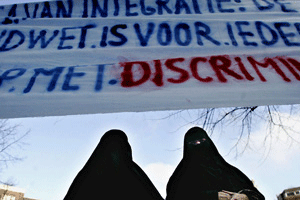

|
|
تصویب قانون ممنوعیت برقع و نقاب توسط دولت هلند
Monday10 بهمن 1390
شهرزاد نیوز: دولت هلند، پس از بلژیک و فرانسه، سومین دولت اروپایی است که قانون ممنوعیت داشتن برقع و نقاب در اماکن عمومی را به تصویب می رساند. این قانون که باید به تصویب پارلمان نیز برسد، روز جمعه 27 ژانویه در نشست اعضای دولت ائتلافی، متشکل از راست محافظه کار و دمکرات مسیحی هلند، به تصویب رسید. متخلفان از قانون به جریمه نقدی تا 390 یورو محکوم می شوند.
طبق این قانون، پوشاندن چهره در اماکن و وسائل نقلیه عمومی و مدارس ممنوع می شود. نظر سنجی ها نشان می دهند که این ممنوعیت مورد حمایت اکثریت مردم کشور 16 میلیونی هلند است. بر پایه تخمین ها حدود 150 زن در هلند به طور دایم از نقاب و برقع استفاده می کنند.
به گزارش خبرگزاری اتریش، لیزبت اسپیس، وزیر انتگراسیون هلند، تصویب این قانون را دارای "اهمیت فوق العاده" دانست و گفت که از این طریق بهتر می توان برابر حقوقی بین زن و مرد را در یک جامعه باز و چند فرهنگی تضمین کرد.